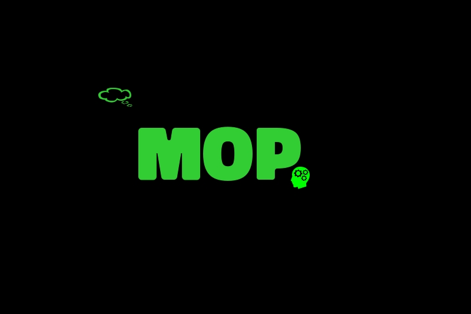

MOP Chatbot
Turn on the sound to hear the explanation 🔊
A self-learning Chatbot made in C++ that learns more from interaction with different users.
MOP is an abbreviation for Money One Place, a state of mind that I was in when this complex thousands of lines of code was made. It was done in 2014 - 2016. It was primarily done on the linux operating system to help both better understand how to use the linux system and get better using a lower language program to sharpen my coding skills. I will probably be more creative with the naming now. It ultimately combines most of my individual projects done in C++
MOP uses complex algorithms to self learn as it is equipped with memory and with the
following attributes and capabilities:

- have conversations
- able to recall information (from past conversations)
- assist with studying and memorization
- able to provide games
- able to provide typing assistance
- control a linux operating system
- word pronunciation
- detect languages
- voice activated
- emotion stimulated, etc.